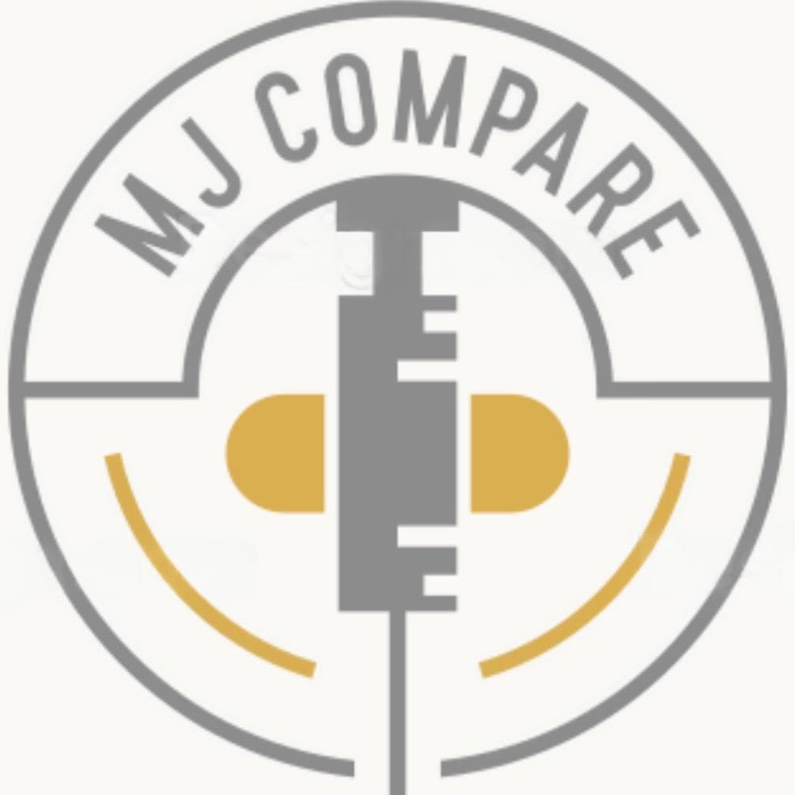

Disclaimer
This website provides factual, publicly available information about pharmacy pricing and services for prescription medications. The website is updated on an ad-hoc basis, meaning updates occur irregularly and prices may not always be current. Users are strongly advised to verify all pricing information directly with the pharmacy before making any decisions. While I strive to include as many pharmacies as possible, there may be some that are not listed on this platform.
Important Notices:
Legitimacy of Pharmacies:
This website aims to ensure that all listed pharmacies are legitimate and registered with the General Pharmaceutical Council (GPhC) or equivalent regulatory bodies. However, users should independently verify the legitimacy and registration status of any pharmacy before purchasing medication. The responsibility for ensuring the safety and compliance of any pharmacy lies with the user, and the website accepts no liability for errors, omissions, or any issues arising from the use of listed pharmacies.
No Promotion of Prescription-Only Medicines (POMs):
This website does not promote or endorse any specific prescription-only medication. All information presented here is intended for informational purposes only and should not be construed as advertising, solicitation, or recommendation for any particular medicine or pharmacy.
Consultation Required:
Prescription-only medications can only be obtained following a consultation with a qualified healthcare professional. Users must rely on their prescriber’s advice regarding the suitability and appropriateness of any medication.
Independent Platform:
This platform does not receive commission, financial incentives, or personal benefit from any pharmacy or third party. Referral codes or discounts displayed on this site have been gathered from publicly available online sources and may benefit individuals or organisations that choose to share their codes. This website has no direct affiliation or connection with these individuals or entities and does not endorse their services.
No Medical Advice:
The content on this website is not a substitute for professional medical advice, diagnosis, or treatment. Always seek the advice of your doctor, pharmacist, or other qualified healthcare provider with any questions you may have regarding a medical condition.